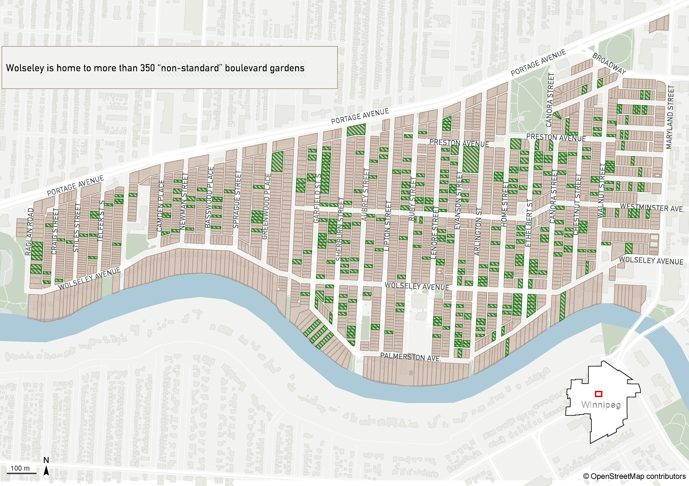
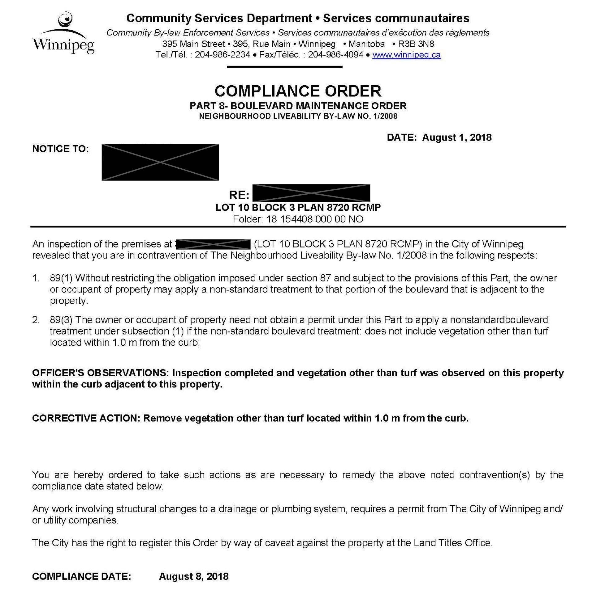

Boulevard gardens make this Winnipeg neighbourhood special. Are they for everyone?
Wolseleyites have planted hundreds of gardens on the city-owned boulevards.
A shoe leather investigation reveals who's got the greenest streets.
By Julia-Simone Rutgers
Winnipeg’s Wolseley neighbourhood, nestled into the crook of the Assiniboine River and enveloped by a
lush canopy of stately old elm trees, is known for being a little greener — and a little more granola —
than other corners of the windswept prairie town.
Kitsch, colour and creativity put the character of the neighbourhood on display.
These boulevard gardens are in part a bi-product of the neighbourhood’s age — many of the early 20th century homes
were built towards the back of characteristically small lots, making front yard gardens are a more practical choice.
Besides their charm, they serve a handful of practical purposes, providing food and habitat for the diverse riverside ecosystem,
absorbing rainwater and storm runoff to reduce the load on the city’s easily-overwhelmed sewer system,
cooling air temperatures and improving air quality.

Note 1: Data was collected by manually recording the street number and street name of each garden.
See the end of the story for a detailed explanation of the methodology.
Despite their many benefits — including for municipal infrastructure systems — boulevard gardens are a bit of a regulatory grey zone.
Homeowners are generally responsible for maintaining the strip of grass between the sidewalk and the roadway,
but the land itself is owned by the city, meaning it can be ripped up, mowed down or piled over with snow at the city’s discretion.
According to Winnipeg's Neighbourhood Liveability bylaws, “non-standard boulevard treatments” are permitted on most streets,
so long as they adhere to a handful of rules about placement, vegetation type, vegetation height and utility access.
Planting a boulevard garden that does not adhere to those rules requires a $46 permit.

This compliance order for a boulevard garden (which was a certified "Monarch Waystation") was later successfully appealed. Source: City of Winnipeg
Most of the time, these gardens go off without a hitch. Sometimes, neighbours call in 311 complaints, and occasionally city inspectors take notice.
A boulevard garden violation can be subject to tickets or fines, though it's not always clear how the law is enforced.
In light of this muddled regulatory landscape and Wolseley's mixed-income nature,
I wanted to understand whether boulevard gardens — and the benefits that come with them — are available to everyone.
Note 2: For this analysis, where granular income data is difficult to come by, relative 'wealth' or 'expensiveness' of a given street or region was determined by the latest assessed property value.
This price is set by the municipality to determine annual property taxes. It is available via the Winnipeg Open Data.
The streets with the highest density of boulevard gardens are:
Ethelbert — A central street which boasts 30 gardens across 65 homes for a density of 46 percent
Preston — A relatively short street with a nearly-block long garden and a density of 33 percent
Raglan — The most westerly street in the neighbourhood, flanked on one side by a large park and featuring gardens at 32 percent of homes
Garfield — Another central block with 28 gardens in 90 homes, many of which stretch across multiple properties
and Knappen — A short avenue at nearly the most north easterly point of the neighbourhood, with 30 percent of homes featuring gardens
I initially suspected the “wealthier” parts of the neighbourhood — anecdotally thought to be homes further south (closer to the river)
and further west — would be more densely packed with gardens. This sampling of densely greened streets showed that may not be the case.
Note 3: The north-south dividing line used in this analysis is the latitude of the approximate centerline of Westminster Ave.
The 'West' region begins at Dominion St and the 'East' region begins at Canora St, with everything between considered the 'Central' region.
An explanation for these geographic divisions can be found in the analysis notebook.
While it’s true the southwest is a more expensive place to live, these areas are not the most densely packed with gardens.
Instead, that honour goes to the long, central streets that stretch from north to south and represent a range of economic means.
These boulevard gardens, then, are a charming quirk of the neighbourhood writ large — not only its wealthiest corners.
Gardens like these on Ethlebert St are a highlight of some city walking tours.